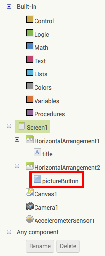
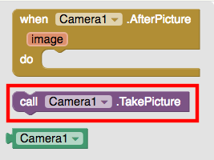
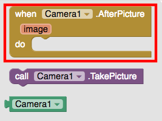
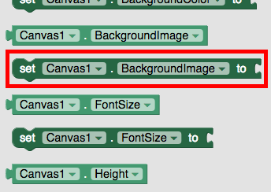
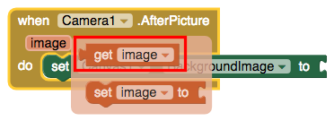
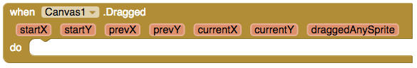
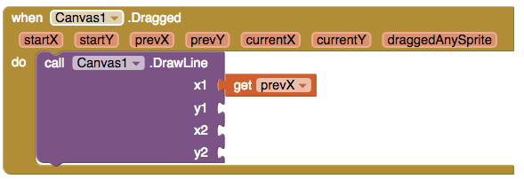
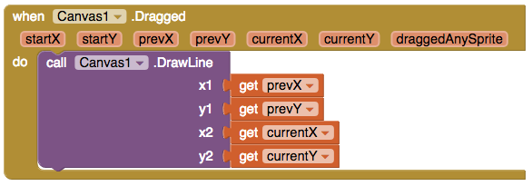
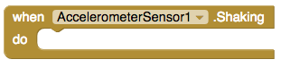
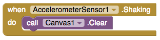

Snapchat Remix Tutorial
Let's make an app that can take a photo and set it as the background, draw different-colored dots and lines on the photo, and sends the photo to your friends.
Start by connecting the companion app so you can test this on your mobile device. If you don't know how to connect. click here.

This is the initial screen you will see in the viewer. The components include a label, two HorizontalArrangements, a button, a canvas, a camera, and an AccelerometerSensor.

First, we will change the app so that when you tap the "Take a picture" button, the camera will turn on so you can take a picture.
Begin by clicking on the "Blocks" button in the upper right corner.

Click on the pictureButton drawer on the left.
Click and drag the "when pictureButton.Click" button into the workspace.

Click on the Camera1 drawer.

Click and drag "call Camera1.TakePicture" to the workspace and add it to "when pictureButton.Click".
The blocks should look like this:

Now, we'll set the image we took with the camera to be the background image of the camera. Click on Camera1 again inside blocks.
Then drag the "when Camera1.AfterPicture" block to the Viewer.
Now click Canvas1 in Blocks.

And scroll down and drag "set Canvas1.BackgroundImage to" to the workspace.
Connect "set Canvas1.BackgroundImage to" to "when Camera1.AfterPicture".

Click on the red image button on the "when Camera1.AfterPicture" block and click on "get image".
Connect this new block to "set Canvas1.BackgroundImage to" so your blocks look like this:

Test the "take a picture" button and watch the image appear on the canvas!
Now, we'll learn how to draw on the canvas.
Click on Canvas1.
And choose the "when Canvas1.Dragged" block.
Click on Canvas1 again and choose "call Canvas1.DrawLine". Connect it to the "when Canvas1.Dragged" block.

The app has to be told where each line should start and end. In order to connect each line to the last, hover over prevX and choose "get prevX".

Drag "get prevX" to the x1 socket.
Repeat with the other sockets, corresponding prevY to y1, currentX to x2, and currentY to y2.
Take a second to test out your app again using your AI Companion or Emulator!
Finally, we want to clear our canvas by shaking our device.
Click on AccelerometerSensor1.

Choose the "when AccelerometerSensor1.Shaking" block.
Now, click on Canvas1.
Scroll down, and drag the "call Canvas1.clear" block to connect it to the "when AccelerometerSensor1.Shaking" block.
Try it out on your device. What happens?
Change up this basic tutorial by adding more features using the ideas in the next section.
Expand your app
Create a trash button to erase your image instead of shaking.
Connect a button that clears the canvas similar to how the Accelerometer Sensor does.
Draw dots on your picture.
Use the draw circle block to draw dots on your picture.
Add an image you've already taken to the canvas background.
Use the image picker component to select an image from your device.
Change the color of your lines and dots.
Use buttons to change the color of your paint and even create a random color button.
Add text to the canvas
Use a new button and text box to add text to the center of the canvas.
Create a share button to send your picture to your friends.
Use the sharing component to grab and send your picture.
Create a Twitter button.
Use the Twitter component to share your picture with the world!